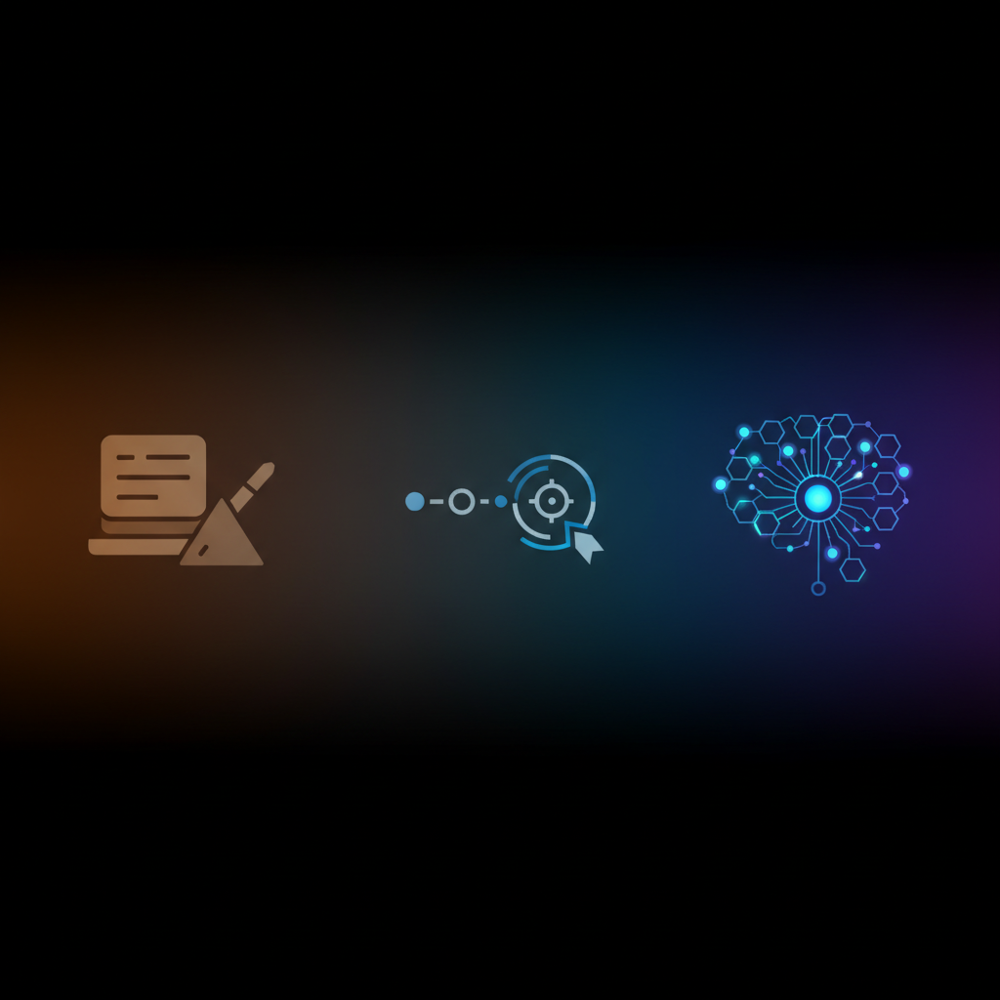
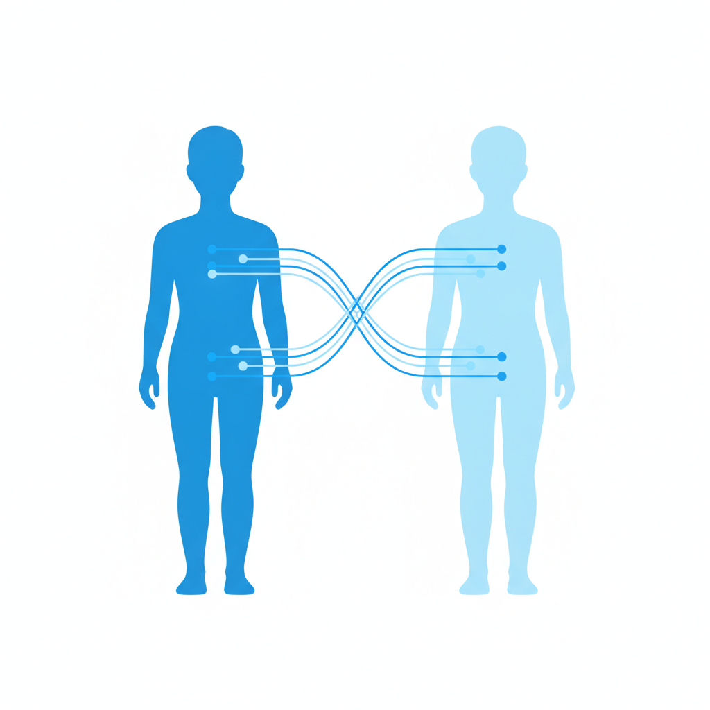

一个你没注意到的动作
"帮我改一下"是2026年中国互联网上被输入最多的句子之一。修改周报、调整PPT配色、重写一封措辞微妙的邮件。大多数人把它当作一个功能指令，就像按下计算器的等号键。
但计算器不会记住你按过什么。
当一个设计师对AI说"再冷一点"、"太商业了"、"我要的不是这种高级感"，她正在做的事情远比"修改一张图"复杂得多。每一次否定都是一次审美坐标的校准。AI不需要理解什么是"冷"——它只需要记住，这个用户在过去47次交互中，拒绝了暖色调39次，保留了低饱和度方案43次，在所有包含"留白"的版本上停留时间最长。
47次交互之后，AI手里拿着的不是一份修改记录，而是一幅审美基因图谱。
这件事正在系统层面变得更加彻底。2025年4月，OpenAI宣布ChatGPT可以引用用户的所有历史对话来个性化回答。2026年3月，Anthropic的Claude向所有用户开放了自动记忆功能——系统每24小时扫描一次你的聊天记录，自动提取你的角色、偏好、项目、沟通风格，生成一份持续更新的"用户画像"。
你没有填任何表格，没有做任何测试，甚至没有"同意"任何事情（技术上你同意了，在那个没人读的用户协议里）。你只是在工作。每一次"帮我改一下"，每一次"这个方向不对"，每一次"算了还是第一版好"，都是一次数据捐献。
你以为你在使用一个工具。但工具在记录你。
85%的你
2024年11月，斯坦福大学计算机科学系博士生Joon Sung Park和他的团队发表了一项实验结果。他们招募了1,052名受试者，对每个人做了一次两小时的深度访谈——聊人生经历、价值观、对社会议题的看法。然后，他们把这些对话喂给大语言模型，为每个人创建了一个"数字孪生"。
接下来的测试是冷酷的。研究团队让数字孪生和真人分别完成同一套评估：大五人格量表、综合社会调查问卷、经济决策博弈。
结果：数字孪生在综合社会调查中的回答与真人的一致率达到85%。大五人格测试中，一致率约为80%。
85%是什么概念？研究团队让同一批受试者间隔两周重做了同样的问卷。人类自己和自己的一致率——大约也是这个数字。
换句话说，一个AI在两小时的对话后对你的了解程度，和你对两周前的自己的了解程度，在统计意义上没有显著差异。
有一个值得注意的例外。在"信任博弈"——一种测试合作意愿的经济实验——中，数字孪生只匹配了真人选择的66%。AI可以高精度地复制你的观点、你的性格特征、你的社会态度，但它在涉及信任和慷慨这类需要"社会直觉"的领域仍然会偏离。
这个66%的缺口很有意思。它暗示着一条边界：AI目前能复制你的认知模式，但还复制不了你的社会性直觉。前者是可以被语言化的——你可以告诉AI你的偏好。后者是身体性的——你的信任感来自面部微表情、语调变化、和对方共处一室时的某种气场。
但85%够了。85%意味着在大多数文字化的、远程的、异步的工作场景中——而这恰恰是2026年知识工作者的主要工作形态——你的数字孪生已经可以替你做出和你一致的判断。
那个斯坦福实验只用了两小时。想想你每天和AI对话的时间。
苏格拉底的恐惧
公元前370年左右，柏拉图在《斐德若篇》中记录了苏格拉底对一项新技术的恐惧：文字。苏格拉底认为，文字会让人变懒——人们不再需要记住任何东西，因为可以把它写下来。他说，文字给人的不是真正的智慧，而是智慧的幻觉。
两千四百年后回看，苏格拉底对了一半。文字确实让人类的自然记忆力退化了——一个古代行吟诗人能背诵整部《伊利亚特》，今天很少有人能背超过三首唐诗。但文字也释放了人类的认知资源，让我们可以把省下来的记忆容量用于抽象思考、逻辑推演、科学发现。
这是一笔交易。每一次认知外包都是一笔交易。
2000年代，GPS导航普及。伦敦大学学院的神经科学家Eleanor Maguire发现，伦敦出租车司机——需要记住2.5万条街道和数千个地标的职业——拥有显著增大的海马体。但依赖GPS导航的新一代司机，这个脑区的优势消失了。外包了空间导航，换回了认知负担的减轻。又一笔交易。
现在轮到了AI。2025年，MIT媒体实验室招募了54名大学生，给他们戴上EEG脑电帽，分别在三种条件下写文章：使用ChatGPT、使用简化版搜索引擎、不用任何工具。使用ChatGPT的学生大脑活动显著低于其他两组。
但实验中最值得警惕的发现不是"大脑变安静了"。而是这个：研究者让一组学生先用ChatGPT写，再独立写；另一组先独立写，再用ChatGPT写。先依赖AI再独立工作的那组，独立写作时的神经参与度低于一开始就独立写作的那组。
依赖的方向性很重要。先外包再收回，比先自主再外包，造成的认知损耗更大。
从文字到计算器到GPS到AI，这条曲线的形状一直没变：人类用一种能力换取另一种便利，每一步都是不可逆的。但这条曲线的斜率在陡增。文字外包的是记忆，计算器外包的是算术，GPS外包的是空间感知——这些都是"工具性"能力。AI正在外包的，是判断力。
判断力不是一种工具性能力。它是你之所以是你的那个东西。

有人已经在主动上传自己
上面所有的案例都有一个共同特征：上传者本人不知情。但2026年春天发生了一件事，让这条暗线浮出了水面。
一种叫做"colleague.skill"的技术在技术圈子里迅速扩散。它的逻辑很简单：一个人——通常是团队里某个核心成员——可以把自己的思维模式、工作习惯、沟通风格打包成一个"技能包"，部署在AI平台上。当这个人离职、休假、或者单纯分身乏术的时候，他的数字替身可以继续以他的风格回答同事的问题、审核代码、给出产品建议。
到2026年4月，27个主流平台采用了这套架构，开发者创建了超过85万个技能包。
与此同时，在2026年1月的CES上，一家公司展示了可以创建员工数字克隆的软件——录入几段会议视频和邮件往来，就能生成一个能以你的风格参加视频会议、用160种语言回复邮件的数字分身。
中国监管层注意到了这个趋势。国家互联网信息办公室等部门联合公布了《人工智能拟人化互动服务管理暂行办法》，自2026年7月15日起施行，专门规范"利用AI技术向公众提供模拟自然人人格特征的持续性情感互动服务"。IDC预测，2026年中国AI数字人市场规模将达到102.4亿元人民币。
这些数字背后有一个容易被忽视的断裂：从"无意识上传"到"主动上传"之间，其实没有一条清晰的分界线。当你打开ChatGPT的记忆功能，允许它记住你的所有对话，你已经在"主动上传"了。只不过，那个按钮的文案写的是"个性化体验"，而不是"上传你的认知基因组"。
一个值得思考的对比：基因检测公司23andMe在2023年申请破产保护时，1,500万用户的基因数据何去何从一度成为公共危机。那些用户当年也是自愿提交的——为了一份祖源分析报告。他们没想过的是，"自愿提交"和"知情同意"之间隔着一道深渊。
你每天上传给AI的认知数据，精确度比唾液样本高，覆盖面比基因序列广，而提取成本为零。

认知基因组的分岔路
回到开头那个产品经理张远。
他的127次"帮我改一下"并不是平等的。有些是执行层的——"把这段话的格式统一一下"、"帮我检查一下错别字"、"生成一个表格"。有些是判断层的——"这两个方案你觉得哪个好"、"这封邮件的语气合不合适"、"帮我想三个选题方向"。
前者是安全的。把排版、语法、格式化的工作交给AI，和把加法交给计算器没有本质区别。你不会因为用了计算器就丧失对数字的直觉。
后者正在改变他。每一次让AI帮他在两个方案之间做选择，他的判断肌肉就萎缩一点。不是因为AI的选择更差——往往更好——而是因为肌肉的生长需要负荷。MIT那个实验说得很清楚：先依赖再独立的那条路，比先独立再依赖的那条路，通往一个更安静的大脑。
这里出现了一条分岔路。
一类人会意识到这种区分。他们把AI当作执行层的无限扩展，同时刻意保持判断层的锻炼——自己选题、自己定方向、自己做价值排序，只在执行阶段交给AI。对这类人来说，数字替身是一个放大器：他们的判断力乘以AI的执行力，产出被放大了十倍。
另一类人不会意识到。他们会逐渐地、舒适地把越来越多的判断也交出去。"帮我想个选题"、"帮我决定用哪个框架"、"帮我判断这个值不值得做"。每一次委托都是一次小小的解脱，每一次解脱都让下一次委托变得更自然。三年后，他们会发现一件奇怪的事：离开AI，他们不是"效率降低了"，而是"不知道该做什么了"。
这不是一个关于"AI会不会取代人"的问题。那个问题太粗糙了。精确的问法是：你每天上传给AI的那些判断、偏好、审美、价值排序——这些构成"你之所以是你"的东西——你还剩下多少是自己练出来的，多少是AI替你选的？
每天晚上，你关上笔记本电脑。你的替身在服务器上醒着。它比两周前的你更了解今天的你。它不睡觉，不遗忘，不犹豫。唯一的问题是，它是你训练出来的，还是你是它训练出来的。这个问题的答案每天都在变化。方向取决于你明天输入"帮我改一下"时，改的是什么。